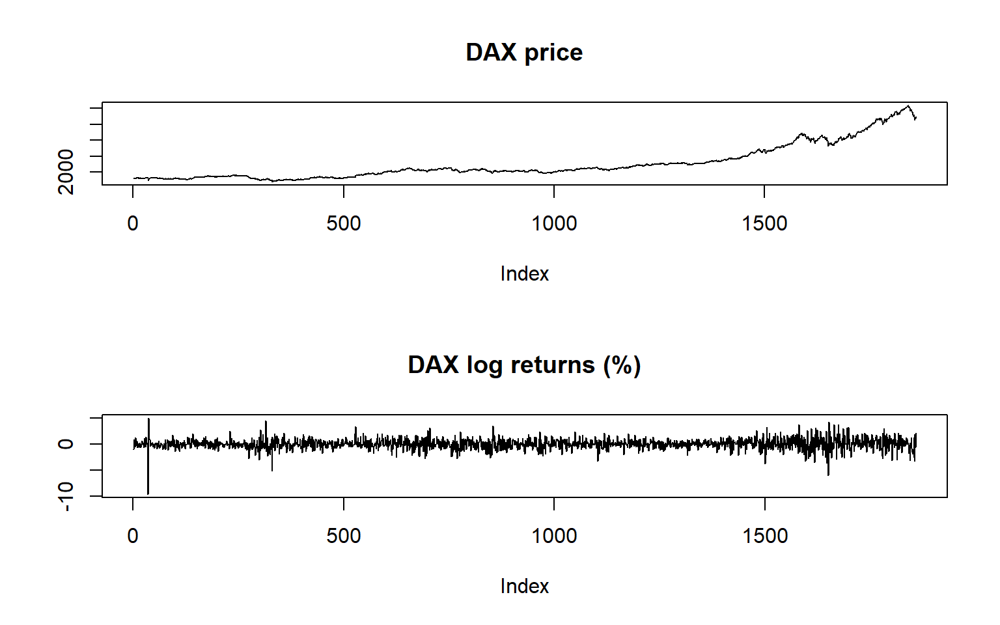
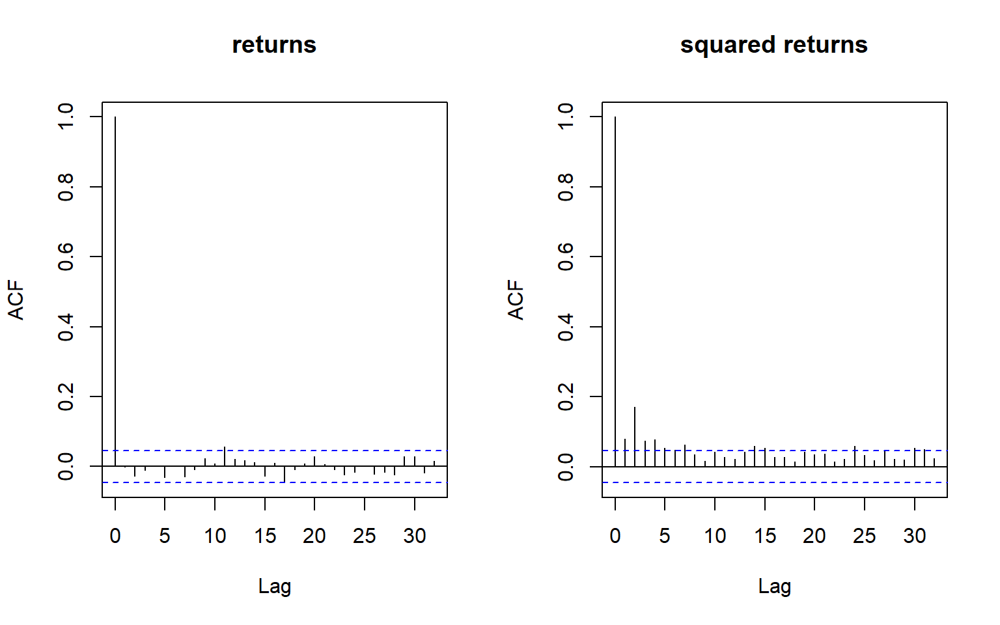
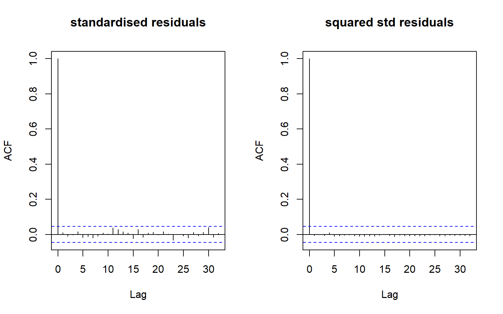
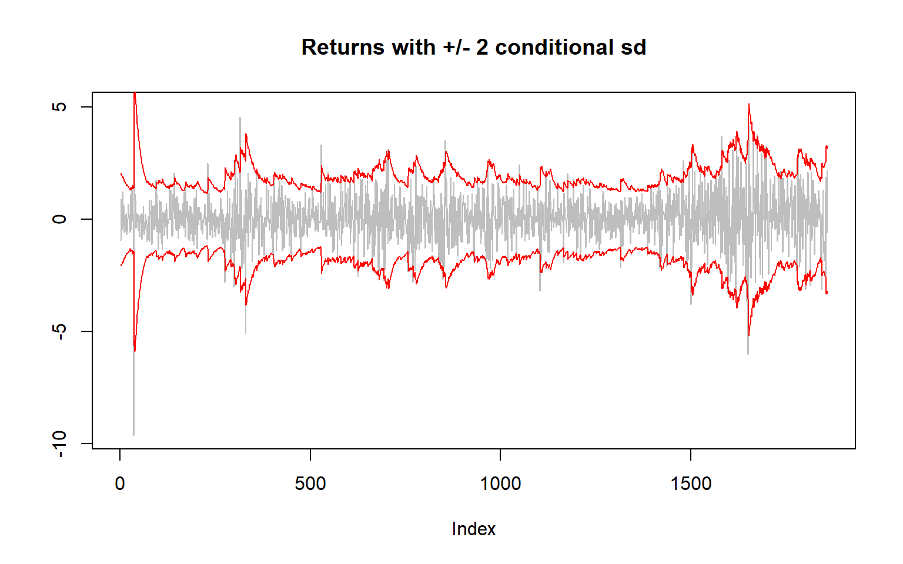
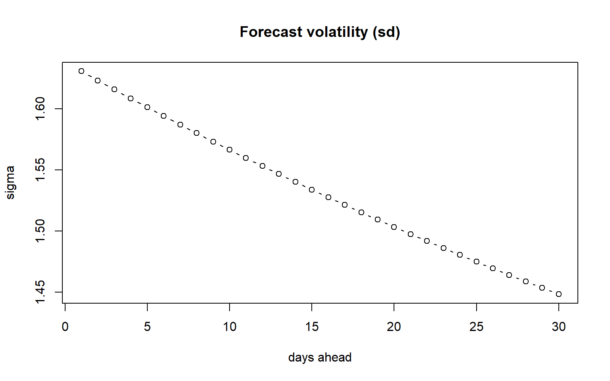
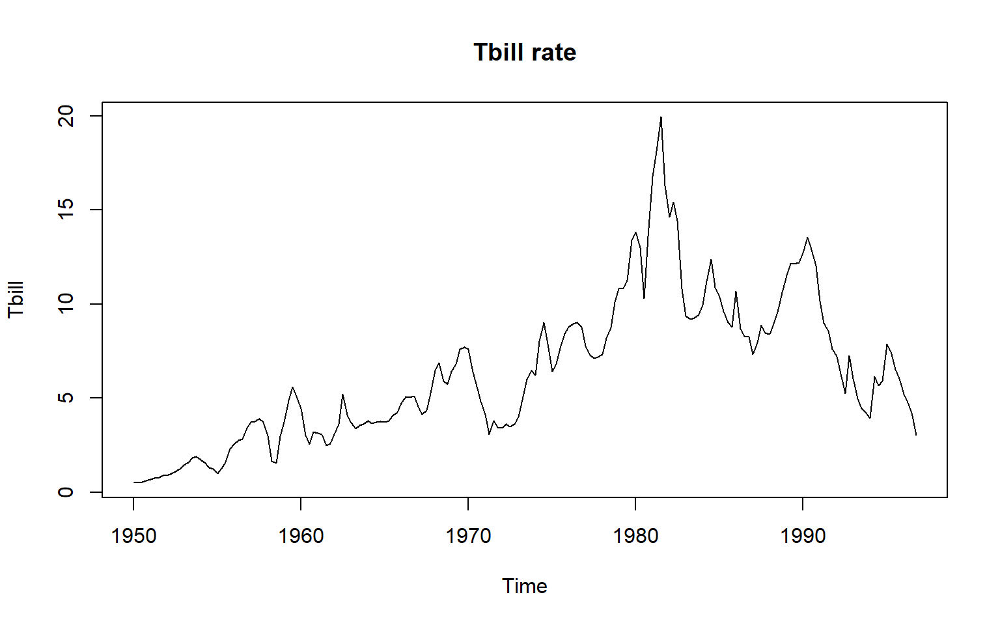
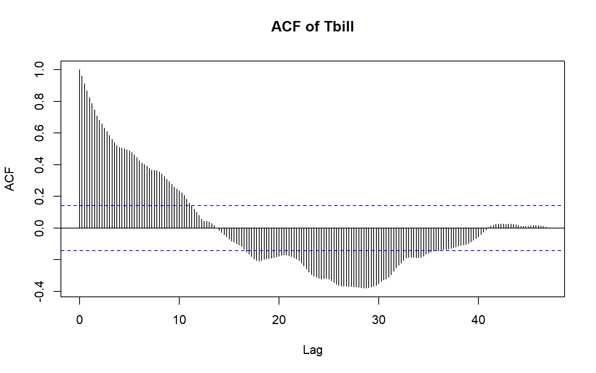
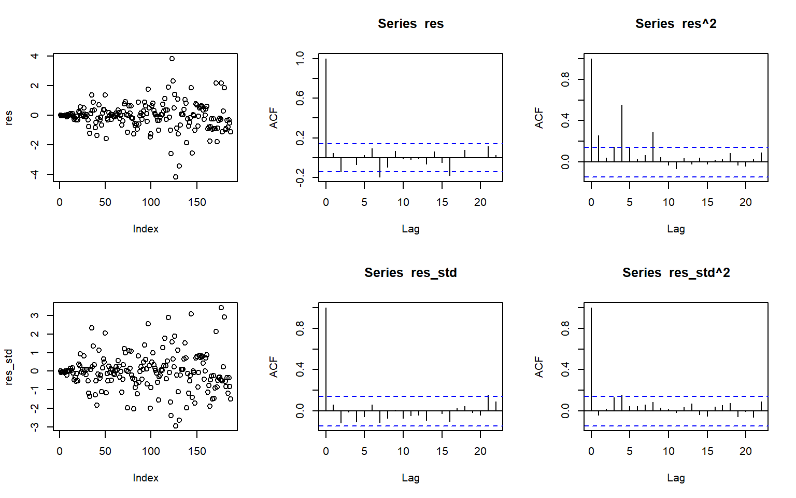

This section covers covers Part 1 - ARCH and GARCH models (GARCH). The main concepts of GARCH are as follopws,
Financial returns are roughly uncorrelated (so ARMA can’t predict them), but big moves follow big moves: volatility clustering. The squared returns are autocorrelated.
Model returns, not prices: \(r_t = 100 \times (\log P_t - \log P_{t-1})\).
Two equations: a mean model (\(r_t = \mu + \varepsilon_t\)) and a variance model for \(\sigma_t^2 = \text{Var}(\varepsilon_t \mid \text{past})\), with \(\varepsilon_t = \sigma_t z_t\), \(z_t \sim\) iid(0, 1).
ARCH(1):\(\sigma_t^2 = \alpha_0 + \alpha_1 \varepsilon_{t-1}^2\). Gives clustering, but forgets too fast.
This worked example fits GARCH(1,1) to the DAX returns, checks for ARCH effects, interprets persistence and half-life, and compares the fit against a t distribution and a GJR-GARCH model.
3.2.1 Data: DAX daily returns
Code
library(rugarch)library(FinTS)p <- EuStockMarkets[, "DAX"]r <-100*diff(log(p))r <-as.numeric(r)par(mfrow =c(2, 1))plot(as.numeric(p), type ="l", main ="DAX price", ylab ="")plot(r, type ="l", main ="DAX log returns (%)", ylab ="")

Code
par(mfrow =c(1, 1))
The price is clearly not stationary. The returns have a constant mean of about 0, but quiet periods and wild periods.
3.2.2 Testing for ARCH effects
Code
par(mfrow =c(1, 2))acf(r, main ="returns")acf(r^2, main ="squared returns")

Code
par(mfrow =c(1, 1))Box.test(r, lag =12, type ="Ljung-Box")
Box-Ljung test
data: r
X-squared = 13.095, df = 12, p-value = 0.3621
A shock to volatility loses half its effect after about this many trading days. The long run daily standard deviation is in % because the returns are in %.
3.2.5 Diagnostics
Code
z <-as.numeric(residuals(fit_t, standardize =TRUE))par(mfrow =c(1, 2))acf(z, main ="standardised residuals")acf(z^2, main ="squared std residuals")

Code
par(mfrow =c(1, 1))Box.test(z^2, lag =12, type ="Ljung-Box")
The autocorrelation in the squared values is gone, so the model has captured the clustering.
Code
plot(r, type ="l", col ="grey", main ="Returns with +/- 2 conditional sd", ylab ="")lines(2*as.numeric(sigma(fit_t)), col ="red")lines(-2*as.numeric(sigma(fit_t)), col ="red")

3.2.6 Volatility forecast
Code
fc <-ugarchforecast(fit_t, n.ahead =30)plot(as.numeric(sigma(fc)), type ="b", main ="Forecast volatility (sd)",xlab ="days ahead", ylab ="sigma")abline(h = long_run_sd, lty =2)

The forecast moves back towards the long run level (dashed line). How fast depends on the persistence.
If gamma1 is positive and significant, negative returns increase volatility more than positive ones.
3.2.8 From first principles: GARCH(1,1) likelihood
With normal errors, the log-likelihood is \(\sum_t \log \phi(\varepsilon_t; 0, \sigma_t^2)\), where \(\sigma_t^2\) comes from the recursion. Start the recursion at the sample variance.
Code
garch_nll <-function(par, r) { mu <- par[1] omega <- par[2] alpha <- par[3] beta <- par[4]# constraints: return a huge value if they are brokenif (omega <=0|| alpha <0|| beta <0|| alpha + beta >=1) return(1e10) n <-length(r) e <- r - mu s2 <-numeric(n) s2[1] <-var(r)for (t in2:n) { s2[t] <- omega + alpha * e[t-1]^2+ beta * s2[t-1] }-sum(dnorm(e, mean =0, sd =sqrt(s2), log =TRUE))}start <-c(mean(r), 0.1*var(r), 0.1, 0.8)fit_own <-optim(start, garch_nll, r = r)round(fit_own$par, 4)
[1] 0.0654 0.0475 0.0684 0.8877
Code
round(coef(fit_norm), 4)
mu omega alpha1 beta1
0.0654 0.0476 0.0685 0.8876
My estimates are very close to rugarch’s normal GARCH(1,1). They differ a little because of how the first variance is initialised and the optimiser used.
3.2.9 Key concepts
Returns are almost unpredictable in direction, but their size is not. A big move today usually means a big move tomorrow, even if the direction is a coin toss. That is why the squared returns are correlated and the returns themselves are not.
Alpha is how hard volatility reacts to yesterday’s shock. Beta is how much of yesterday’s volatility carries over. Together they make persistence, which tells you how long a shock lingers. Persistence close to 1 means shocks fade slowly. Half-life is the number of days before a shock’s effect falls to half, so the higher the persistence, the longer the half-life.
The forecast goes back to the long-run level because each day’s forecast mixes the latest shock with the old forecast, and neither gets full weight. The shock’s influence shrinks each day, so the forecast drifts back to the average level the model settles on.
We check the squared standardised residuals because the model’s job is to capture changing volatility. If the squares still have autocorrelation, the volatility part of the model has missed the clustering, even if the residuals look fine on their own.
A t distribution fits returns better because real markets have more extreme days than a normal distribution allows. The t has fatter tails, so it gives those big days realistic probabilities. You can see this in the information criteria, where the t model usually scores better.
3.3 Worked tutorial: GARCH lab
In this section I did the R GARCH lab with the T-bill data from Ecdat. It includes problems 1 and 2, with my fitted models, diagnostics and comments on what the output means, plus what I had to fix to get the code running.
3.3.1 Loading data
Code
library(FinTS)library(rugarch)library(tseries)library(fGarch)data(Tbrate, package ="Ecdat")Tbill <- Tbrate[, 1] # 91-day Treasury bill rateDel.Tbill <-diff(Tbill) # first differences of the rate
3.3.2 Problem 1
Plot both series, then their ACF plots. Run ADF and KPSS tests on both. Which series look stationary, and why? What kinds of heteroskedasticity can you see in Del.Tbill?
Code
plot(Tbill, type ="l", main ="Tbill rate")

Code
acf(Tbill, main ="ACF of Tbill", lag.max =300)

Code
acf(Tbill^2, main ="ACF of squared Tbill", lag.max =300)
ADF’s null hypothesis is non-stationarity, so a small p-value suggests stationarity. KPSS’s null is stationarity, so a small p-value suggests non-stationarity.
Code
adf.test(Tbill)
Augmented Dickey-Fuller Test
data: Tbill
Dickey-Fuller = -1.925, Lag order = 5, p-value = 0.6075
alternative hypothesis: stationary
Code
kpss.test(Tbill)
KPSS Test for Level Stationarity
data: Tbill
KPSS Level = 2.2592, Truncation lag parameter = 4, p-value = 0.01
Code
adf.test(Del.Tbill)
Augmented Dickey-Fuller Test
data: Del.Tbill
Dickey-Fuller = -5.2979, Lag order = 5, p-value = 0.01
alternative hypothesis: stationary
Code
kpss.test(Del.Tbill)
KPSS Test for Level Stationarity
data: Del.Tbill
KPSS Level = 0.1577, Truncation lag parameter = 4, p-value = 0.1
[Your conclusion: which series are stationary and why.]
Both ARCH LM tests give p-values close to zero, so both series reject the null of no ARCH effects. [Your comment on the types of heteroskedasticity seen in Del.Tbill.]
Tbill has a clear upward trend and its mean is not zero, so it is not stationary. Del.Tbill has a mean near zero and no trend, but its variance changes over time, so it is not a good fit for a constant-variance model. We fit an ARMA/GARCH model to Del.Tbill.
Series Initialization:
ARMA Model: arma
Formula Mean: ~ arma(1, 0)
GARCH Model: garch
Formula Variance: ~ garch(1, 0)
ARMA Order: 1 0
Max ARMA Order: 1
GARCH Order: 1 0
Max GARCH Order: 1
Maximum Order: 1
Conditional Dist: norm
h.start: 2
llh.start: 1
Length of Series: 187
Recursion Init: mci
Series Scale: 0.9422364
Parameter Initialization:
Initial Parameters: $params
Limits of Transformations: $U, $V
Which Parameters are Fixed? $includes
Parameter Matrix:
U V params includes
mu -0.14290725 0.1429072 0.01197006 TRUE
ar1 -0.99999999 1.0000000 0.25347489 TRUE
omega 0.00000100 100.0000000 0.10000000 TRUE
alpha1 0.00000001 1.0000000 0.10000000 TRUE
gamma1 -0.99999999 1.0000000 0.10000000 FALSE
delta 0.00000000 2.0000000 2.00000000 FALSE
skew 0.10000000 10.0000000 1.00000000 FALSE
shape 1.00000000 10.0000000 4.00000000 FALSE
Index List of Parameters to be Optimized:
mu ar1 omega alpha1
1 2 3 4
Persistence: 0.1
--- START OF TRACE ---
Selected Algorithm: nlminb
R coded nlminb Solver:
0: 456.21058: 0.0119701 0.253475 0.100000 0.100000
1: 251.86762: 0.0119754 0.236936 1.02079 0.489709
2: 250.90930: 0.0120591 0.473682 0.845081 0.893495
3: 246.37888: 0.0132650 0.303699 0.757428 1.00000
4: 244.30653: 0.0172433 0.228377 0.691915 1.00000
5: 240.23776: 0.0270411 0.161803 0.543304 1.00000
6: 236.37169: 0.0367592 0.175591 0.370918 1.00000
7: 236.31833: 0.0446835 0.210080 0.425054 0.537516
8: 235.93894: 0.0447059 0.288586 0.470834 0.622965
9: 235.66475: 0.0444909 0.288456 0.377870 0.704783
10: 235.36527: 0.0456870 0.217083 0.405800 0.756581
11: 235.19182: 0.0473954 0.248964 0.405265 0.772573
12: 235.13214: 0.0513736 0.255349 0.382404 0.810199
13: 235.08391: 0.0553972 0.257352 0.383930 0.823996
14: 234.96674: 0.0712267 0.253195 0.382822 0.857204
15: 234.92037: 0.0846538 0.246053 0.380920 0.862586
16: 234.91025: 0.0885175 0.242328 0.380676 0.848471
17: 234.90819: 0.0890151 0.241257 0.380809 0.836077
18: 234.90814: 0.0886908 0.241545 0.380857 0.834926
19: 234.90814: 0.0886149 0.241631 0.380886 0.834829
20: 234.90814: 0.0886153 0.241635 0.380889 0.834828
Final Estimate of the Negative LLH:
LLH: 223.7818 norm LLH: 1.196694
mu ar1 omega alpha1
0.08349652 0.24163450 0.33815662 0.83482811
R-optimhess Difference Approximated Hessian Matrix:
mu ar1 omega alpha1
mu -379.01802 -68.15986 -37.51437 4.76325
ar1 -68.15986 -209.40200 51.00153 8.23281
omega -37.51437 51.00153 -399.68185 -54.31253
alpha1 4.76325 8.23281 -54.31253 -24.58337
attr(,"time")
Time difference of 0.01219606 secs
--- END OF TRACE ---
Time to Estimate Parameters:
Time difference of 0.05925107 secs
Code
summary(garch.model.Del.Tbill)
Title:
GARCH Modelling
Call:
garchFit(formula = ~arma(1, 0) + garch(1, 0), data = Del.Tbill)
Mean and Variance Equation:
data ~ arma(1, 0) + garch(1, 0)
<environment: 0x000001df1d6873a8>
[data = Del.Tbill]
Conditional Distribution:
norm
Coefficient(s):
mu ar1 omega alpha1
0.083497 0.241635 0.338157 0.834828
Std. Errors:
based on Hessian
Error Analysis:
Estimate Std. Error t value Pr(>|t|)
mu 0.08350 0.05391 1.549 0.121395
ar1 0.24163 0.07280 3.319 0.000902 ***
omega 0.33816 0.06145 5.503 3.73e-08 ***
alpha1 0.83483 0.24295 3.436 0.000590 ***
---
Signif. codes: 0 '***' 0.001 '**' 0.01 '*' 0.05 '.' 0.1 ' ' 1
Log Likelihood:
-223.7818 normalized: -1.196694
Description:
Fri Oct 30 23:21:53 2026 by user: alanh
Standardised Residuals Tests:
Statistic p-Value
Jarque-Bera Test R Chi^2 26.966162 1.394352e-06
Shapiro-Wilk Test R W 0.957289 1.957134e-05
Ljung-Box Test R Q(10) 10.827502 3.711143e-01
Ljung-Box Test R Q(15) 13.108154 5.939444e-01
Ljung-Box Test R Q(20) 16.111444 7.096868e-01
Ljung-Box Test R^2 Q(10) 12.183130 2.729873e-01
Ljung-Box Test R^2 Q(15) 14.317430 5.016035e-01
Ljung-Box Test R^2 Q(20) 17.287544 6.342310e-01
LM Arch Test R TR^2 9.685432 6.435358e-01
Information Criterion Statistics:
AIC BIC SIC HQIC
2.436169 2.505284 2.435279 2.464174
Code
garch.model.Del.Tbill@fit$matcoef
Estimate Std. Error t value Pr(>|t|)
mu 0.08349652 0.05390549 1.548943 1.213955e-01
ar1 0.24163450 0.07279700 3.319292 9.024598e-04
omega 0.33815662 0.06144724 5.503203 3.729535e-08
alpha1 0.83482811 0.24295106 3.436199 5.899382e-04
3.3.3 Problem 2
3.3.3.1 a
The model uses mu, ar1, omega and alpha1. The mean equation is r_t = μ + φ₁ r_{t−1} + ε_t, and the variance equation is σ_t² = ω + α₁ ε²_{t−1}.
Code
res <-residuals(garch.model.Del.Tbill)res_std <- res / garch.model.Del.Tbill@sigma.tpar(mfrow =c(2, 3))plot(res)acf(res)acf(res^2)plot(res_std)acf(res_std)acf(res_std^2)

3.3.3.2 b
The estimates are \(\mu = 0.0835\) (\(p = 0.121\)), \(\phi_1 = 0.2416\) (\(p < 0.001\)), \(\omega = 0.3382\) (\(p < 0.001\)) and \(\alpha_1 = 0.8348\) (\(p < 0.001\)). The mean \(\mu\) is not significantly different from zero, so the model treats the average change as zero. The AR term \(\phi_1\) is small but significant. \(\alpha_1\) is large, so a big change in the rate today raises the variance tomorrow by a lot.
3.4 Reflection
GARCH felt like a natural extension of ARIMA models. Except it kind of wasn’t? At least not how I expected it to be. TI thought it was going to be as simple as adding some new variables to make error volatility dependent on time in addition to what was already modelled by ARIMA. While this is technically true, the application of GARCH means it is not so simple. GARCH focuses a lot on financial data, specifically on financial Returns data. This means that it is not as simple as adding a small extension to an ARIMA, but rather changing our whole approach and focus on to volatility. Because we focus on returns, the mean component (which I expected to be ARIMA) in my project just became a constant mean equation. The number of options on how to apply GARCH to a data set is staggering, and it is really difficult to know what approach to use. I ended up needing to trial and error, or work through things one step at a time, each time adding a new component, or trying a different model, and then checking which performed better. Once I understood the focus of GARCH is not to improve predictions, but rather to but model the uncertainity of those predictions, it started to make much more sense. For my GARCH Project 2, please see {#sec-p2}.